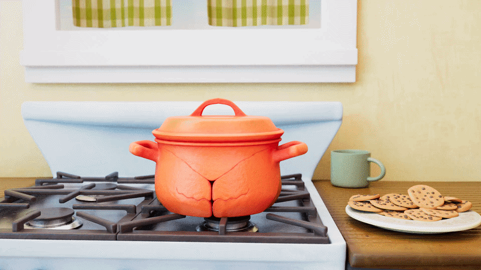

07 / Project detail
Crab Pot

I created this mimic character from modeling through final animation. An ordinary kitchen pot transforms to reveal itself as a crab-like creature. I also modeled the environment and textured the assets in Substance Painter.
For the final shot, I created a Maya cloth simulation for the curtains and rendered the scene with Arnold.